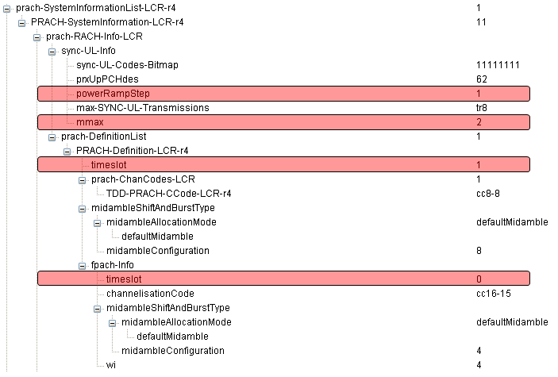
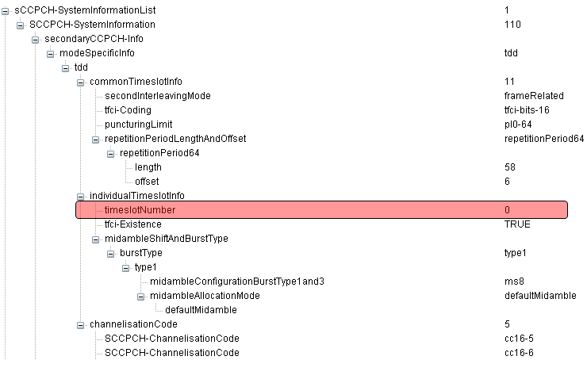
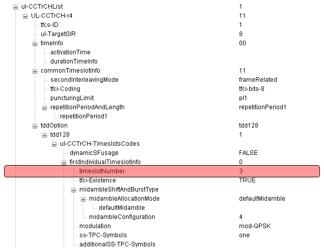
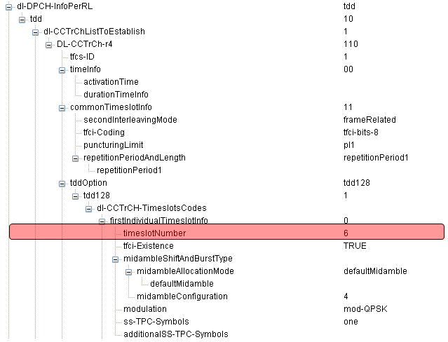

| Quick Reference - Common Channel Configuration |
|
As in WCDMA, in TDSCDMA SIB5 mostly configures physical layer configuration for common channels as PRACH, SCCPCH etc. Since these are mostly about PHY configuration, you need to have detailed knowledge on physical layer as described in Frame Structure, RMC, RAB overview. Try to create a frame structure table as shown in RMC and fill out the table based on the information contained in SIB5.




|